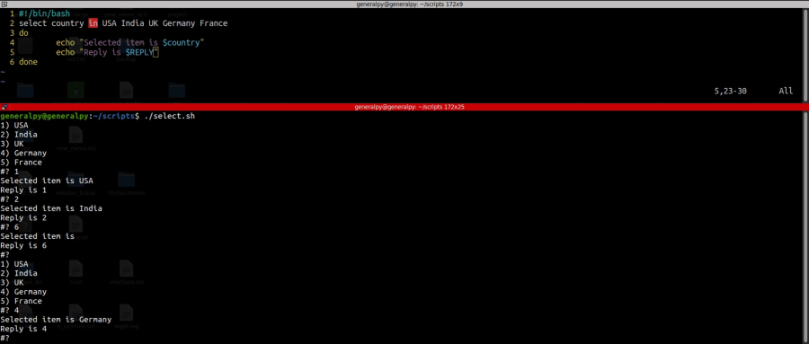
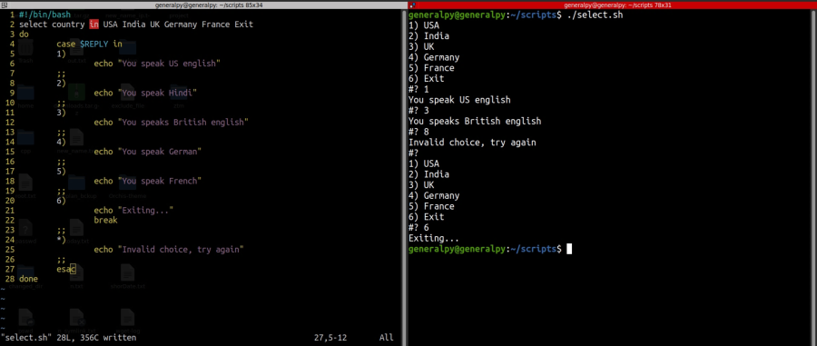

select statement can be used in bash to create a menu.
Syntax is :
select var in list
do
#commands REPLY variable is created to hold user input
done
When using select , a variable REPLY is automatically created to store user's reply.
select displays a menu with its items being items of list and runs an infinite loop until break or ctrl + c are encountered.

Above code shows how we menu is shown and how reply is processed. When empty input is provided, menu is displayed again.
Let us add some logic to our code.

PS3 variable is used to handle the prompt. We can change its value to show a diffrerent prompt from #?.